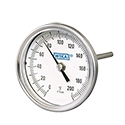
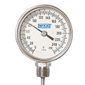
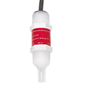
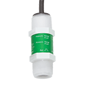
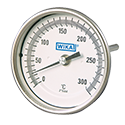
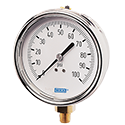
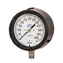
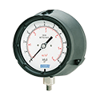
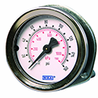

Pressure/Temperature Sensors
Harrington is your trusted supplier of high-quality pressure and temperature sensors. We offer a wide range of styles and manufacturers. Select your product to request a quote, get additional information, and explore purchasing options.

Model TI.30 Process Grade Bimetal Thermometer, Resettable, 3" Dial, 1/2" NPT Connection, 2-1/2" Stem, Center Back Mount, 0/250 °Fper EA · Sign in for price- Model TI.30 Process Grade Bimetal Thermometer, Resettable, 3" Dial, 1/2" NPT Connection, 4" Stem, Center Back Mount, 0/250 °FCall for availabilityAsk a branch
- Model TI.30 Process Grade Bimetal Thermometer, Resettable, 3" Dial, 1/2" NPT Connection, 9" Stem, Center Back Mount, 50/550 °Fper EA · Sign in for price

Model TI.31 Process Grade Bimetal Thermometer, 3" Dial, 1/2" NPT Connection, 2-1/2" Stem, Lower Mount, 0/250 °F, ± 1.0% of Scale Accuracyper EA · Sign in for price- Model TI.32 Process Grade Bimetal Thermometer, Adjustable Angle, 3" Dial, 1/2" Connection, 2-1/2" Stem, Lower Mount, 0/250 °F, ± 1.0% Full Scale Value AccuracyCall for availabilityAsk a branch
- Model TI.32 Process Grade Bimetal Thermometer, Adjustable Angle, 3" Dial, 1/2" Connection, 4" Stem, Lower Mount, - 40/120 °F, ± 1.0% Full Scale Value Accuracyper EA · Sign in for price
- Model TI.32 Process Grade Bimetal Thermometer, Adjustable Angle, 3" Dial, 1/2" Connection, 4" Stem, Lower Mount, 0/250 °F, ± 1.0% Full Scale Value Accuracyper EA · Sign in for price

Series 2350 Temperature Sensor Remoteper EA · Sign in for price
Pressure Sensor Digital (S3L), 0-250 psi, PVDF, 1/2" Male Union, 15' cableper EA · Sign in for price- Pressure Sensor Digital (S3L), 0-50 psi, PVDF, 1/2" Male Union, 15' cableper EA · Sign in for price
- Pressure Sensor Digital (S3L), 0-10 psi, PVDF, 1/2" Male Union, 15' cableper EA · Sign in for price
- Pressure Sensor Current 4 to 20 mA, 0-250 psi, PVDF, 1/2" Male Union, 15' cableper EA · Sign in for price
- Pressure Sensor Current 4 to 20 mA, 0-50 psi, PVDF, 1/2" Male Union, 15' cableper EA · Sign in for price
- Pressure Sensor Current 4 to 20 mA, 0-10 psi, PVDF, 1/2" Male Union, 15' cableper EA · Sign in for price

Model TI.33 Industrial Grade Bimetal Thermometer, 3" Dial, 1/2" Connection, 2-1/2" Stem, Center Back Mount, 0/250 °F, ± 1.0% Full Scale Value Accuracyper EA · Sign in for price
Model 212.54 Industrial Pressure Gauge, Dry-Filled, Copper Alloy Wetted Parts, 304 Stainless Steel Case, Viton® Seal, 4" Dial, 1/4" Male NPT Connection, Lower Mount, 0-100 psi, ± 1% Accuracyper EA · Sign in for price- Model 212.54 Industrial Pressure Gauge, Dry-Filled, Copper Alloy Wetted Parts, 304 Stainless Steel Case, Viton® Seal, 4" Dial, 1/4" Male NPT Connection, Lower Mount, 0-3000 psi, ± 1% Accuracyper EA · Sign in for price

Model 232.34 XSEL® Process Gauge Bourdon Tube, Dry, 316L Stainless Steel Wetted Parts, 4-1/2" Dial, 1/2" NPT Connection, Lower Bottom Mount, 30 inHg Vacuum, ± 0.5% of Span Accuracyper EA · Sign in for price
Model 632.34 Low Pressure Process Gauge, Black Thermoplastic Case, 316L Stainless Steel Wetted Parts, Dry, 4-1/2" Dial, 1/4" NPT Connection, Lower Mount, 30 inH2O Scale, ± 2/1/2% of Span Accuracyper EA · Sign in for price Model 232.53 Pressure Gauge Bourdon Tube, Dry-Filled, Stainless Steel Wetted Parts, 304 Stainless Steel Case, 2" Dial, 1/4" NPT Connection, Lower Mount, 0-100 psi, ± 2-1/2% of Span Accuracyper EA · Sign in for price
Model 232.53 Pressure Gauge Bourdon Tube, Dry-Filled, Stainless Steel Wetted Parts, 304 Stainless Steel Case, 2" Dial, 1/4" NPT Connection, Lower Mount, 0-100 psi, ± 2-1/2% of Span Accuracyper EA · Sign in for price
Model 111.16 Pressure Gauge Bourdon Tube, Copper Alloy Wetted Parts, Black ABS Case, 1-1/2" Dial, 1/8" NPT Connection, Center Back Mount, 0-100 psi, ± 3/2/3% of Span Accuracy, with Zinc-Plated U-Clampper EA · Sign in for price- Model 111.16 Pressure Gauge Bourdon Tube, Copper Alloy Wetted Parts, Black ABS Case, 2" Dial, 1/8" NPT Connection, Center Back Mount, 0-60 psi, ± 3/2/3% of Span Accuracy, with Zinc-Plated U-Clampper EA · Sign in for price
- Model 111.16 Pressure Gauge Bourdon Tube, Copper Alloy Wetted Parts, Black ABS Case, 2" Dial, 1/8" NPT Connection, Center Back Mount, 0-160 psi, ± 3/2/3% of Span Accuracy, with Zinc-Plated U-Clampper EA · Sign in for price
- Model 111.16 Pressure Gauge Bourdon Tube, Copper Alloy Wetted Parts, Black ABS Case, 2" Dial, 1/4" NPT Connection, Center Back Mount, 30 inHg Vacuum, ± 3/2/3% of Span Accuracy, with Zinc-Plated U-Clampper EA · Sign in for price
- Model 111.16 Pressure Gauge Bourdon Tube, Copper Alloy Wetted Parts, Black ABS Case, 2" Dial, 1/4" NPT Connection, Center Back Mount, 0-60 psi, ± 3/2/3% of Span Accuracy, with Zinc-Plated U-Clampper EA · Sign in for price
- Model 111.16 Pressure Gauge Bourdon Tube, Copper Alloy Wetted Parts, Black ABS Case, 2" Dial, 1/4" NPT Connection, Center Back Mount, 0-300 psi, ± 3/2/3% of Span Accuracy, with Zinc-Plated U-Clampper EA · Sign in for price
- Model 213.54 Industrial Pressure Gauge, Glycerin Fill, Copper Alloy Wetted Parts, 304 Stainless Steel Case, EPDM Seal, 2-1/2" Dial, 1/4" Male NPT Connection, Lower Mount, 0 - 100 psi, ± 1% Accuracyper EA · Sign in for price
- Model 212.54 Industrial Pressure Gauge, Dry-Filled, Copper Alloy Wetted Parts, 304 Stainless Steel Case, Viton® Seal, 2-1/2" Dial, 1/4" Male NPT Connection, Lower Mount, - 30 - 30 psi, ± 1% Accuracyper EA · Sign in for price
 Model 111.100 Pressure Gauge Bourdon Tube, Copper Alloy Wetted Parts, Black Plastic Case, 2" Dial, 1/4" NPT Connection, Lower Mount, 30 inHg Vacuum, ± 3/2/3% of Span Accuracyper EA · Sign in for price
Model 111.100 Pressure Gauge Bourdon Tube, Copper Alloy Wetted Parts, Black Plastic Case, 2" Dial, 1/4" NPT Connection, Lower Mount, 30 inHg Vacuum, ± 3/2/3% of Span Accuracyper EA · Sign in for price- Model 111.10 Pressure Gauge Bourdon Tube, Copper Alloy Wetted Parts, Black Plastic Case, 2" Dial, 1/4" NPT Connection, Lower Mount, 0 - 15 psi, ± 3/2/3% of Span Accuracyper EA · Sign in for price
- Model 111.10 Pressure Gauge Bourdon Tube, Copper Alloy Wetted Parts, Black Plastic Case, 2" Dial, 1/4" NPT Connection, Lower Mount, 0 - 30 psi, ± 3/2/3% of Span Accuracyper EA · Sign in for price
- Model 111.10 Pressure Gauge Bourdon Tube, Copper Alloy Wetted Parts, Black Plastic Case, 2" Dial, 1/4" NPT Connection, Lower Mount, 0 - 60 psi, ± 3/2/3% of Span Accuracyper EA · Sign in for price
- Model 111.10 Pressure Gauge Bourdon Tube, Copper Alloy Wetted Parts, Black Plastic Case, 2" Dial, 1/4" NPT Connection, Lower Mount, 0 - 100 psi, ± 3/2/3% of Span Accuracyper EA · Sign in for price
- Model 111.10 Pressure Gauge Bourdon Tube, Copper Alloy Wetted Parts, Black Plastic Case, 2" Dial, 1/4" NPT Connection, Lower Mount, 0 - 160 psi, ± 3/2/3% of Span Accuracyper EA · Sign in for price
- Model 111.10 Pressure Gauge Bourdon Tube, Copper Alloy Wetted Parts, Black Plastic Case, 2" Dial, 1/4" NPT Connection, Lower Mount, 0 - 200 psi, ± 3/2/3% of Span Accuracyper EA · Sign in for price
- Model 111.10 Pressure Gauge Bourdon Tube, Copper Alloy Wetted Parts, Black Plastic Case, 2" Dial, 1/4" NPT Connection, Lower Mount, 0 - 300 psi, ± 3/2/3% of Span Accuracyper EA · Sign in for price
- Model 111.10 Pressure Gauge Bourdon Tube, Copper Alloy Wetted Parts, Black Plastic Case, 2" Dial, 1/4" NPT Connection, Lower Mount, 0 - 400 psi, ± 3/2/3% of Span Accuracyper EA · Sign in for price
- Model 111.10 Pressure Gauge Bourdon Tube, Copper Alloy Wetted Parts, Black Plastic Case, 2-1/2" Dial, 1/4" NPT Connection, Lower Mount, 30 inHg Vacuum, ± 3/2/3% of Span Accuracyper EA · Sign in for price
- Model 111.10 Pressure Gauge Bourdon Tube, Copper Alloy Wetted Parts, Black Plastic Case, 2-1/2" Dial, 1/4" NPT Connection, Lower Mount, - 30 inHg/15 psi, ± 3/2/3% of Span Accuracyper EA · Sign in for price
- Model 111.10 Pressure Gauge Bourdon Tube, Copper Alloy Wetted Parts, Black Plastic Case, 2-1/2" Dial, 1/4" NPT Connection, Lower Mount, - 30 inHg/30 psi, ± 3/2/3% of Span Accuracyper EA · Sign in for price